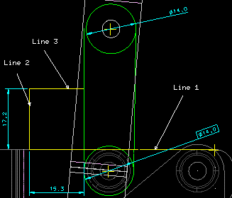
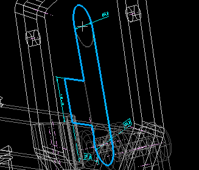
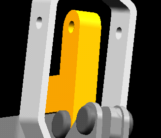

(Demonstrator 2)
| Next Step | Return to Table of Contents | Previous Step |
Redisplay in Line Mode
Show the Front View and zoom into the Handle and U Bar holes

Focus on the two Link pivot holes and create two yellow points on the workplane


Ground these points
Sketch two Circles centered on the ground points with approximate radius = 13

Modify the bottom diameter dimension to match the top diameter
Modify the top diameter to equal 14
Create two lines that are tangent to the top circle and terminate on the bottom circle ( Be sure that the lines are not auto grounded )


Add Tangency between the lines and the bottom circle
Sketch two Circles centered on the previous circles
RMB
Options
Radius = 2.5 mm

Focus on the top of the U Bar to design the stop into the Link
RMB
Focus on a top vertex of the right hand end of the U Bar

Ground this point

Sketch three lines as per the picture below
(Note: Line 1 is horizontal, Line 2 is parallel to the
link edge, and Line 3 is parallel to Line 1)

Modify both new dimensions to 15 mm


Extrude with stop at intersections
on, the inner circles and the outer lines and circles
|  |  |

Calculate properties of the Link. This must be done before the Sheet Metal and FE Analysis
Select the Link, the ? (Material Properties), General Isotropic Steel, OK, Calculate, Dismiss the form
| Next Step | Return to Table of Contents | Previous Step |